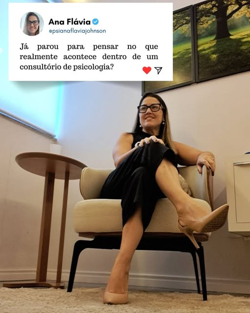

Escutar o que sente
Dar nome às emoções e encontrar espaço para falar sobre aquilo que tem sido difícil colocar em palavras.
UM ENCONTRO COM VOCÊ
Entre o que você sente e o que vive, há espaço para se escutar, se compreender e descobrir novos caminhos.
Agendar uma conversa
Seu sentir
tem lugar aqui.
O ESPAÇO DA PSICOTERAPIA
Às vezes, o primeiro passo é permitir que suas perguntas tenham espaço. A psicoterapia é um convite a olhar para si com mais atenção e respeito.
Dar nome às emoções e encontrar espaço para falar sobre aquilo que tem sido difícil colocar em palavras.
Olhar para sua história, suas relações e suas necessidades, respeitando a singularidade do seu caminho.
Refletir sobre escolhas e descobrir outras formas de se relacionar consigo e com o que acontece à sua volta.
PRAZER, ANA FLAVIA
Sou Ana Flavia Johnson, psicóloga.
Que bom ter você por aqui.
Acredito na importância de um espaço em que seja possível se escutar, se compreender e descobrir novos caminhos. Um encontro em que sua história possa ser acolhida com respeito.
A psicoterapia é um processo construído em conjunto, no seu ritmo. Não é preciso chegar com tudo organizado: podemos começar a partir do que faz sentido para você hoje.
“Entre o que você sente e o que vive,
há espaço para se escutar.”
PARA COMEÇAR
Você pode perguntar, conhecer o atendimento e entender como começar.
Falar pelo WhatsAppEnvie uma mensagem pelo WhatsApp e conte que gostaria de saber mais.
Converse sobre horários, valores e as possibilidades de atendimento.
Combine sua primeira sessão e dê início a esse espaço de escuta.
Você pode começar pelo que estiver presente para você naquele momento, inclusive pela dificuldade de falar. A sessão é um espaço para construir essa conversa aos poucos.
Clique em um dos botões de agendamento do site. Você será direcionado ao WhatsApp de Ana Flavia para consultar a disponibilidade e combinar sua sessão.
As informações sobre valores, horários disponíveis e modalidades de atendimento são fornecidas diretamente pelo WhatsApp.
Sim. Entre em contato para conhecer o atendimento e esclarecer suas dúvidas antes de combinar a primeira sessão.
PARA LEVAR A REFLEXÃO COM VOCÊ
UM TEMPO PARA VOCÊ
Quando fizer sentido para você, estou por aqui.
Vamos conversar sobre o seu primeiro passo?